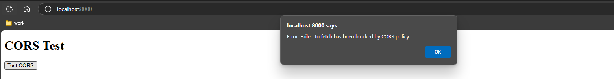
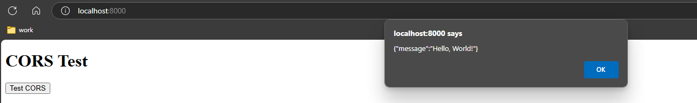

kutubuku
kutubuku
CORS (Cross-Origin Resource Sharing) is a security mechanism implemented by web browsers to prevent unauthorized requests from one origin to another. An origin is defined by its protocol, domain, and port.
For example, in http://my-site.com:
httpmy-site80 for http and 443 for https.Web browsers handle two types of requests: same-origin requests and different-origin requests.
A same-origin request occurs when the request is made within the same origin.
For instance, a request from http://my-site.com/app1 to http://my-site.com/app2 is considered a same-origin request.
Web browsers allow these requests without any issues.
The issue comes when a different-origin request happens when the request is made across different origins.
For example, a request from http://my-site.com to http://another-site.com is a different-origin request.
In this case, the browser will block the request.
This blocking mechanism is essential for protecting users from malicious websites that attempt to access resources on different domains without permission. However, it can also pose challenges for developers who need to build applications that interact with APIs hosted on different domains.
To overcome this, we must explicitly specify which cross-origins are allowed to communicate with one another.
In this blog post, we'll walk through an example of a CORS issue and demonstrate how to resolve it effectively.
Imagine you're hosting a party at your house (the front end at http://localhost:8000).
You want to order a cake from your favorite supplier in another city (the back end at http://awesome-cake.amazonaws.com).
However, your house has a strict security guard who won't let you send messages to people outside without explicit permission. This guard represents CORS (Cross-Origin Resource Sharing).
To order the cake, you need the supplier to give you a special pass, telling the guard it's okay to send the request. This pass is like the CORS headers that allow cross-origin requests.
Once you have the pass, the guard lets your request through, and you can successfully order the cake. This ensures secure and authorized communication between your web application and external APIs.
In summary, CORS is like a security guard that protects your web application by explicitly allowing trusted interactions with external resources.
Explore the example project here: https://github.com/ricky-lim/cors-issue
Without CORS enabled, when we attempt to call our API from the front end, we encounter the following error:
"Error: Failed to fetch has been blocked by CORS policy"

If you inspect the Developer Tools Console, a more detailed error message is shown:
localhost/:1 Access to fetch at 'https://<api-url>/prod/' from origin 'http://localhost:8000' has been blocked by CORS policy: No 'Access-Control-Allow-Origin' header is present on the requested resource. If an opaque response serves your needs, set the request's mode to 'no-cors' to fetch the resource with CORS disabled.
This indicates that the API request is being blocked due to CORS policy restrictions, as the required Access-Control-Allow-Origin header is missing from the response.
Here's a simple graph illustrating how CORS works using this example.
+----------------+ +----------------------+
| | | |
| Front End | | Back End |
| (http://localhost:8000) | (https://api.example.com)
| | | |
+-------+--------+ +----------+-----------+
| |
| 1. Preflight Request |
+-------------------------------->
| |
| 2. Preflight Response |
<--------------------------------+ (Allowed origins: http://localhost:8000)
| | (Allowed methods: GET)
| |
| 3. Actual Request |
+-------------------------------->
| |
| 4. Actual Response |
<--------------------------------+
Preflight Request: The browser sends a preflight request using the OPTIONS method to the server to check if the actual request is safe to send.
Preflight Response: The server responds with the allowed origins (http://localhost:8000) and allowed methods (GET).
Actual Request: If the preflight check is successful, the browser sends the actual request.
Actual Response: The server responds with the requested data, including the appropriate CORS headers.
To resolve this issue, we need to enable CORS support by configuring the API to allow access from our front end, which is currently running on localhost at port 8000.
1. Add CORS options to our API resource.
class ApiStack(Stack):
def __init__(self, scope: Construct, construct_id: str, **kwargs) -> None:
super().__init__(scope, construct_id, **kwargs)
cors_options = aws_apigateway.CorsOptions(
allow_origins=["localhost:8000"],
allow_methods=["GET"],
)
hello_resource = api.root.add_resource(
"hello",
default_cors_preflight_options=cors_options,
)
2. Add CORS headers in our API lambda:
def handler(event, context):
return {
"statusCode": 200,
"body": "Hello from API!",
# CORS headers
"headers": {
"Access-Control-Allow-Origin": "http://localhost",
"Access-Control-Allow-Methods": "GET",
},
}
3. Check that the CORS issue is resolved:

By following these steps, we have successfully enabled CORS support, allowing our front end to interact with the API without encountering CORS policy restrictions.